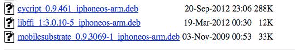
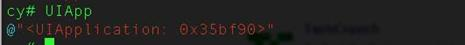
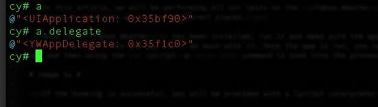
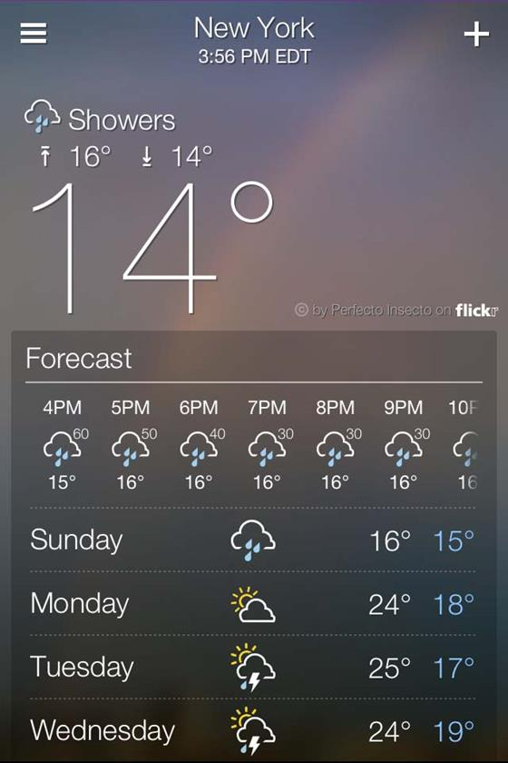
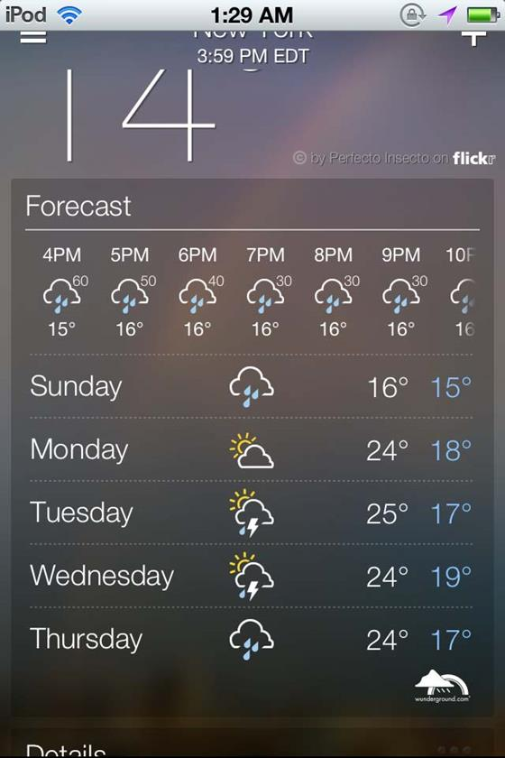
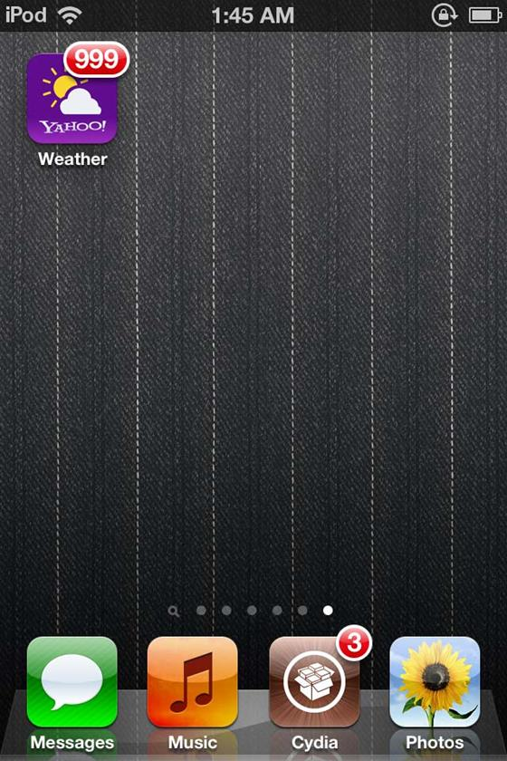
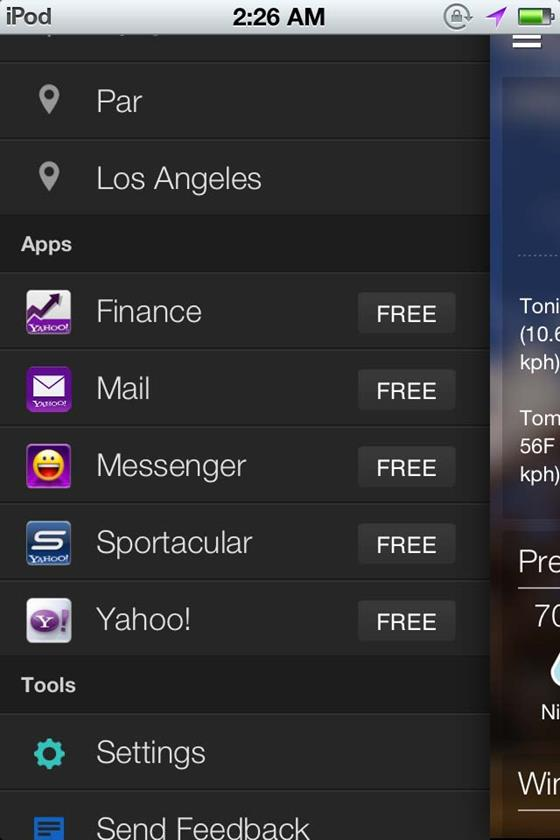

Introduction
In the previous article, we learnt about the runtime capabilities of an IOS App written in Objective-C which uses the Cocoa framework. In this article, we will look at how we can use a very essential tool named Cycript to analyze and modify the runtime of an IOS application. In this article, we will be performing our analysis on the Yahoo Weather IOS app.
Cycript
Cycript is a javascript interpreter which also understands Objective-C syntax, meaning we can write either Objective-C or javascript or even both in a particular command. It can also hook into a running process and help us to modify a lot of the things in the application during runtime. As far as its application to IOS application is concerned, here are some of the advantages of using Cycript.
Installing Cycript
To install Cycript on your device, you must download the latest version from their official download page. Make sure to download the latest version.

Once they have been downloaded on your system, upload them to your device using sftp.
Then use the dpkg command to install cycript on your device.
Then use the cycript command to check and see if everything is working.
Runtime modification with Cycript
In this article, we will be performing all our tests on the Yahoo Weather app. It’s a very neat app with an elegant UI that provides information about the weather of different places.
Once the Yahoo Weather has been installed, run it and make sure the app is the foreground. This is because once the app is in the background , it is in the paused state and you can’t do much with it. Once the app is run, you can directly hook into the running process by finding the PID of the weather app and then using the cycript -p command to hook into the process.
If the hooking is successful, you will be provided with a Cycript interpreter. Now we are all set. You can get the instance of the application by using the Objective-C syntax [UIApplication sharedApplication].
You can also define variables using the Cycript interpreter as shown in the figure below. In this case, i am defining a variable a for [UIApplication sharedApplication]. Note that the L.H.S of this command is Javascript whereas the R.H.S is Objective-C syntax. This is the beauty of Cycript.
Cycript, by default has this variable which makes it easy to refer to the application instance.

To find the delegate class of this application, we can use the command [UIApplication sharedApplication].delegate. But since we already defined a variable a as the application instance, we can use the following command as shown in the figure below.

Hence, we now now that the delegate class name is YWAppDelegate. So the delegate files are defined as YWAppDelegate.h and YWAppDelegate.m. Now, let’s try and call some methods in the app while it is running. A quick look at the application gives this kind of a picture.

As you can see, the status bar of the app is hidden. We can call a method in the application to unhide the status bar. Also, please make sure always that the app is in the foreground while you are performing runtime analysis on the application.
And here is how the app looks now

As you can see, the status bar is now visible. Let’s try and see if we can modify the badge count of this particular application. A badge count is the number shown on the top-right of an application icon image. It usually refers to the amount of push notification received for the application. In mail apps, it can also refer to the amount of unread mails. In Yahoo Weather app, there is no concept of push notifications and hence there is no count shown on the top-right of its app icon. The thing is that the application badge number can be set locally in the app through a simple function call as well as remotely through a push notification from the server. Let’s try and see if we can set the badge count for the app. Here is the Objective-C method that we can need to call. In this case i am setting the badge count to 999
And now if we go back to the home screen, we see the badge count in the app.

Perfect !!
Let’s now investigate more and see what more we can find out about the app. In order to find out the current view controller of the app, we must first find out the keyWindow property. A keyWindow is the window which is currently accepting user interaction (touch events) from the user. If you want to find out all the windows in an app, here is how you do it. Note that a window is of the class type UIWindow.
Now, in order to find out the keyWindow at a particular time in the app, here is how you do it.
Now, the root view controller for this window is found out by using the rootViewController property of the keyWindow. The root view controller property for this window is responsible for displaying the content in the window.
As you can see, the name of the rootViewController class is YahooSlidingViewController. From the name, it is pretty clear that this class is the slider used in the app as shown in the figure below.

Hence, this class basically acts as a facade over all the other view controllers. This means that whenever a menu item is chosen in the menu as shown in the figure above, the YahooSlidingViewController is the class responsible for displaying the appropriate view controller.
Conclusion
In this article, we looked at how we can install Cycript into a jailbroken device, hook into a running process and find out the information about the properties of the application. We also looked at how we can call functions ourselves which are executed inside the sandbox of the application. In the next article, we will look at how we can find out all the methods of a given class and modify its implementation. We will also look at how we can modify the values of instance variables of a particular class.
References:
Cycript
Cycript tricks
http://iphonedevwiki.net/index.php/Cycript_Tricks
{kind=link}
{kind=link}
{kind=link}
{kind=link}
{kind=link}
{kind=link}
{kind=link}
{kind=link}
{kind=link}